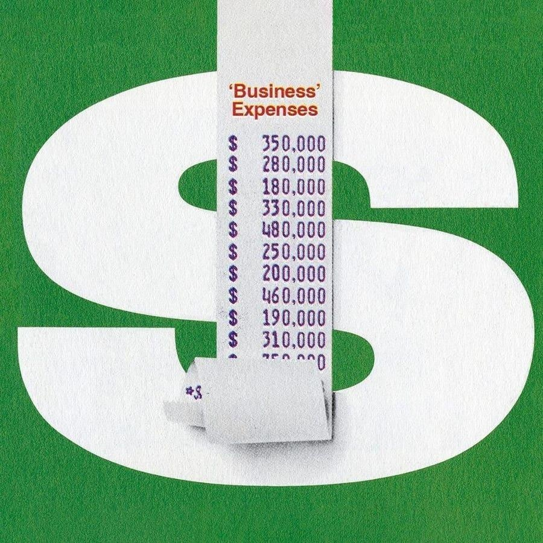

Current Climate: A $46 Million Renewable Energy SwindleThis week’s Current Climate, which every Monday brings you the latest news about the business of sustainability. Sign up to get it in your inbox every week. Whenever there’s a rush of competition into a nascent space, swindlers will find their way to it. Consider green hydrogen, a burgeoning industry with lots of new players and big dreams of powering a more sustainable future. In 2022, a company called Rhino Onward International, or ROI, launched with very big promises, telling investors that it was building a green hydrogen plant in Arizona that would be worth about $530 million within five years. ROI raised $31 million from more than 200 investors, but apparently invested only $200,000 in the business. The firm’s promoters Paul Croft and J.D. Frost diverted the rest of the investors’ money to themselves and entities they control, according to an investor lawsuit filed in Illinois last month, which cited bank records obtained through subpoenas. Beginning in 2021 until last year, Croft, a 42-year-old entrepreneur living in Chicago, and Frost, a 40-year-old accountant based in Chattanooga, Tennessee, raised approximately $46 million from a series of phony renewables investment schemes, according to an investigation by Forbes. About 230 people invested in ROI and related ventures, many of them clients of Croft & Frost, the pair’s now-shuttered accounting and tax advisory business, according to the class action complaint and those familiar with the case. “It became clear they were just using the money to pay for their extravagant lifestyle and pay off debts,” Sarah Bivens, former director of client services at Croft & Frost, who personally invested about $50,000 in ROI, told Forbes. “I don’t know if there was ever a true business plan.” The Big Read In Las Vegas, A Billionaire’s Blueprint For Building Bullet Trains Under a blazing morning Las Vegas sun, billionaire Wes Edens and Transportation Secretary Pete Buttigieg threw a party last week to mark the start of construction of Brightline West, the first private high-speed railway in the U.S., driving yellow spikes into a section of track. Now comes the hard part. The $12 billion project is three years behind his original schedule — delayed by the pandemic and final environmental approvals — but if construction goes as fast as the billionaire cofounder of Fortress Investment Group promises, it'll open in time to speed travelers across the desert at 200 miles per hour from Sin City to Southern California in time for the 2028 Los Angeles Olympics. “The timeline is both realistic and achievable,” Edens told Forbes. “The impact of this is going to be long-lasting and prodigious. And I want it to be successful because I want the next one and the next one and the next one to happen.” Hot Topic Sunrun CEO Mary Powell on using solar and batteries to ease the overtaxed energy grid What’s the basic challenge facing the U.S. electricity grid? The grid is 120-plus years old. It’s not built for economic efficiency. It's about 40% economically efficient — or shall we say 60% inefficient. And it's headed to become even more so because of the massive buildout in transmission. Demand is growing. Just residential energy demand is expected to grow by 22% by 2050. Are large-scale commercial solar and wind projects easing things? It takes five years for the average utility-scale project to become operational. Only 20% of the utility-scale projects that applied for interconnection between 2002 and 2017 reached operation by the end of 2022. Smaller-scale projects can take six to 12 months. As a point of comparison, Sunrun installs about five megawatts every two days. What’s behind your shift from running a utility to leading a solar power company? What struck me when I was a utility executive was that the grid is becoming more costly. It's becoming more fragile because of weather-related events. Building stuff is insufferably slow and energy demand is increasing. My view way back in 2007 was that the only way to build a cost-effective, reliable grid of the future was to lean into as much on-site generation as possible. Scaling at the pace we are and with roughly half of our customers across the nation now also going with storage, we have the capability to turn all the electrification those consumers do with cars and heat pumps and stoves and other things into smart, controllable load for the utility. The cost of a residential solar power system in the U.S. isn’t cheap though panel and battery costs are coming down. Why? People ask me ‘Why is solar cheaper in Australia and quicker to install?’ The quick answer is bureaucracy. It’s not the technology. The panels they're using aren't different. The storage devices they're using aren’t different. It's that the United States of America is in love with bureaucracy at the local level in many states. There are local rules and permitting, there are all of these steps. And there are the utilities which in most jurisdictions still make it harder than they need to, in my opinion, for customers to go solar. What Else We’re Reading Nobel Prize-winning economist proposes to tax the rich to protect the poor from climate change Honda and Toyota commit billions more to North American EV and battery plants Carbon dioxide levels have passed a new milestone California wants to harness more than half its land to combat climate change. Here’s how Asia’s heat wave scorched hundreds of millions Are pollsters getting climate change wrong? Biden Administration cracks down on pollution from coal-burning power plants New research questions long-held belief on wolves’ role in Yellowstone Park’s ecosystem Why EPA efforts to clean up a Kentucky town haven’t worked |
 |